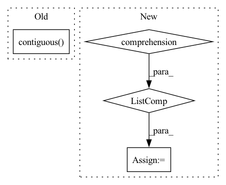

Pattern ID :32296
Before Change
def forward(ctx: Any, group: dist.ProcessGroup, input: Tensor):
if get_world_size(group) <= 1:
return input
output = torch.clone(input).contiguous()
dist.all_reduce(output, op=torch.distributed.ReduceOp.SUM)
return output
@staticmethodAfter Change
return input
ctx.input_shape = input.shape
ctx.leading_dim = 0
chunks = [x.contiguous() for x in torch.chunk(input, chunks=ctx.num_nodes, dim=ctx.leading_dim)]
assert len(chunks) == ctx.num_nodes
output = torch.empty_like(chunks[0])
dist.reduce_scatter(output=output, input_list=list(chunks))
return output
@staticmethodIn pattern: SUPERPATTERN
Frequency: 4
Non-data size: 4
Instances Fragment ID: 94449552
Project Name: microsoft/tutel
Commit Name: 6b434d936b8d892725a0ff0020d2a41f6aa43a3e
Time: 2021-11-15
Author: weicu@microsoft.com
File Name: tutel/impls/communicate.py
M Class Name: PostAllreduceSum
N Class Name: PostAllreduceSum
M Method Name: forward(3)
N Method Name: forward(3)
M Parent Class: torch.autograd.Function
N Parent Class: torch.autograd.Function
M File Name: tutel/impls/communicate.py
N File Name: tutel/impls/communicate.py
M Start Line: 85
M End Line: 89
N Start Line: 93
N End Line: 103
Before Change
def forward(ctx: Any, *input) -> Tensor:
if not AllToAllStatus.initialized or AllToAllStatus.world_size <= 1:
return input[0]
output = torch.empty(AllToAllStatus.gather_tensor_shape, device=input[0].device).contiguous()
tutel_custom_kernel.nccl_all_to_all_gather_async(input, output, False)
return output
@staticmethodAfter Change
if not AllToAllStatus.initialized:
return input[0]
ctx.input_shape = input[0].shape
output_shape = torch.Size([
x if i != AllToAllStatus.split_dim else x * AllToAllStatus.num_split
for i, x in enumerate(ctx.input_shape)
] )
ctx.num_slices_per_split = ctx.input_shape[:AllToAllStatus.split_dim].numel()
return tutel_custom_kernel.nccl_all_to_all_gather_async(input, output_shape, ctx.num_slices_per_split, False)
Fragment ID: 94449554
Project Name: microsoft/tutel
Commit Name: e51df1ca64be59eae3691bc1c64b20a201de1009
Time: 2022-01-31
Author: ziyyang@microsoft.com
File Name: tutel/impls/communicate.py
M Class Name: AllToAllGatherAsync
N Class Name: AllToAllGatherAsync
M Method Name: forward(1)
N Method Name: forward(1)
M Parent Class: torch.autograd.Function
N Parent Class: torch.autograd.Function
M File Name: tutel/impls/communicate.py
N File Name: tutel/impls/communicate.py
M Start Line: 138
M End Line: 142
N Start Line: 129
N End Line: 137
Before Change
if dim != [ind for ind in range(len(dim))]:
// put the desired dimension(s) at the front
zeros = zeros.permute(*dim, *[ind for ind in range(len(zeros.shape)) if ind not in dim]).contiguous()
return zeros.float() / float(total)
After Change
permute_order = sorted(
((d, len(dim) - i - 1) for i, d in enumerate(dim)), reverse=True
)
permute = [d[1] for d in permute_order]
if permute != [i for i in range(len(permute))]:
// need to permute to get desired dimensions at the front
zeros = zeros.permute(*permute).contiguous() Fragment ID: 94449549
Project Name: neuralmagic/sparseml
Commit Name: 36de5fae4791e2e00a61b2459d51438920ce504d
Time: 2020-02-16
Author: mark@neuralmagic.com
File Name: neuralmagicML/utils/helpers.py
M Class Name: AnonimousClass
N Class Name: AnonimousClass
M Method Name: tensor_sparsity(2)
N Method Name: tensor_sparsity(2)
M Parent Class:
N Parent Class:
M File Name: neuralmagicML/utils/helpers.py
N File Name: neuralmagicML/utils/helpers.py
M Start Line: 202
M End Line: 220
N Start Line: 447
N End Line: 478
Before Change
def backward(ctx: Any, grad_output: Tensor):
if get_world_size(ctx.group) <= 1:
return (None, grad_output)
dinput = torch.clone(grad_output).contiguous()
dist.all_reduce(dinput, op=torch.distributed.ReduceOp.SUM)
return (None, dinput)
class PostAllreduceSum(torch.autograd.Function):After Change
if get_world_size(ctx.group) <= 1:
return (None, doutput)
dinput = torch.empty(ctx.input_shape, device=doutput.device, dtype=doutput.dtype)
chunks = [x.contiguous() for x in torch.chunk(doutput.view(ctx.num_nodes, -1), chunks=ctx.num_nodes, dim=0)]
dist.reduce_scatter(output=dinput, input_list=chunks)
return (None, dinput)
class PostAllreduceSum(torch.autograd.Function): Fragment ID: 94449550
Project Name: microsoft/tutel
Commit Name: 6b434d936b8d892725a0ff0020d2a41f6aa43a3e
Time: 2021-11-15
Author: weicu@microsoft.com
File Name: tutel/impls/communicate.py
M Class Name: PreAllreduceSum
N Class Name: PreAllreduceSum
M Method Name: backward(2)
N Method Name: backward(2)
M Parent Class: torch.autograd.Function
N Parent Class: torch.autograd.Function
M File Name: tutel/impls/communicate.py
N File Name: tutel/impls/communicate.py
M Start Line: 76
M End Line: 80
N Start Line: 83
N End Line: 88